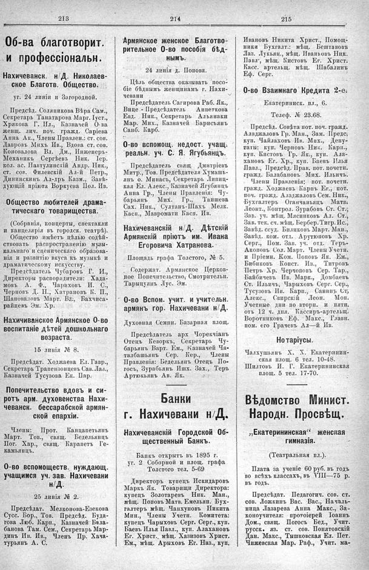

Лист источника 577
Скан

Распознанный текст
213
Об-ва благотворит.
и профессіональн.
Нахичеванск. н/Д. Николаев-
ское Благотв. Общество.
уг. 24 линіи и Загородной.
Предсѣд. Соляникова Вѣра Сам.,
Секретарь Танатарова Марг. Іуст.,
Хрякова Г. Ил., Казначей О-ва
женщ. лич. поч. гражд. Саріева
Анна Ак., Члены Правлен.: ст. сов.
Лавровъ Михъ Ив., Вдова ст. сов.
Коновалова Вл. Дм., Инженеръ-
Механикъ Сергѣевъ Ник. Іер.
кол. ас. Навтулинскій Андр. Ник.,
ст. сов. Филевскій Ал-й Петр.,
Дининскинъ Ал-дръ Казм., Завѣ-
дующій пріюта Воркуева Пол. Ив.
Общество любителей драма-
тическаго товарищества.
(Собранія, концерты, спектакли
и канцелярія въ городск. театрѣ).
Общество имѣетъ цѣлью содѣй-
ствовать распространенію музы-
кальнаго и сценическаго образова-
нія и развитію вкуса къ музыкѣ и
драматическому искусству.
Предсѣдатель Чубаровъ Г. И.,
Директоры распорядители: Хада-
мовъ А. Ф., Чариховъ И. С.,
Черновъ Д. Н., Хатрановъ К. П.,
Шаповаловъ Март. Вл., Бахчиса-
райцевъ Эм. Хр.
Нахичиванское Армянское О-во
воспитаніе дѣтей дошкольнаго
возраста.
15 линія № 8.
Предсѣдат. Ходжаева Ел. Гавр.,
Секретарь Трапензонцевъ Сав. Лаз.,
Казначей Тусузова Ек. Пар.
Попечительство вдовъ и си-
ротъ арм. духовенства Нахи-
чеванск. бессарабской армян-
ской епархіи.
Члены: Прот. Канцапетьянъ
Март. Тов., свящ. Бедельянцъ
Пог. Хар., свящ. Карапетъ Ге-
камьянцъ.
О-во вспомоществ. нуждающ.
учащимся уч. зав. Нахичевани
н/Д.
25 линія № 2.
Предсѣдат. Мелконова-Езекова
Сусс. Бор., Тов. Предсѣд. Буда-
гова Люб. Карп., Казначей Бала-
банова Там. Сем., Секретарь Мар-
динъ Ив. Ив., Членъ Пр. Хача-
турьянъ А. С.
214
Армянское женское Благотво-
рительное О-во пособія бѣд-
нымъ.
24 линія д. Попова.
Цѣль общества оказывать посо-
біе бѣднымъ женщинамъ г. Нахи-
чевани
Предсѣдатель Сагирова Раб. Як.,
Вице - Предсѣдатель Аппеткова
Евд. Ник., Секретарь Альянаки
Мар. Мих., Казначей Барисьянъ
Сапб. Карб.
О-во вспомощ. недост. учащ.
реальн. уч. С. Я. Ягубьянцъ.
Предсѣдатель свящ. Дмитріевъ
Митр., Тов. Предсѣдателя Хумашь-
янъ о. Минасъ, Секретарь Липиц-
кая Ел. Алекс., Казначей Ягубянцъ
Анна Гр., Члены Правленія: Чу-
барьянъ Мих. Гр., Таишева
Сах. Ник., Султанъ-Шахъ Мелк.
Касп., Мавромати Касп. Ив.
Нахичеванскій н/Д. Дѣтскій
Армянскій пріютъ им. Ивана
Егоровича Хатранова.
Площадь графа Толстого, № 5.
Содержат. Армянское Церков-
ное Попечительство, Смотрительн.
Тарыцуянъ Лус. Эм.
О-во Вспом. учит. и учительн.
армянъ гор. Нахичевани н/Д.
Духовная Семин. Базарная площ.
Предсѣдатель арх Чорекчіянъ
Отецъ Кеворкъ, Секретарь Чу-
барьянъ Варт. Ем., Казначей Ча-
талбашьянъ Сер. Кер., Члены
Правленія: Бедельянъ Отецъ По-
госъ, Зурабьянъ Ишх. Зах., Теръ
Артюкьянъ Ав. Як.
Банки
г. Нахичевани н/Д.
Нахичеванскій Городской Об-
щественный Банкъ.
Банкъ открытъ въ 1895 г.
уг. 2 Соборной и площ. графа
Толстого тел. 5-69
Директоръ купецъ Искидаровъ
Маркъ Як. Товарищи Директора:
купецъ Золотаревъ Ник. Ман.,
мѣщ. Поповъ Матв. Емельян. Бух-
галтеръ мѣщ. Чапхуновъ Никита
Мин., Члены Учетн. Комитета:
купецъ Чарыховъ Серг. Серг., куп.
Баевъ Илья Павл., куп. Алахановъ
Ег. Христ., мѣщ. Хазизовъ Христ.
Ем., мѣщ. Арыховъ Ег. Наз., куп.
215
Ивановъ Никита Христ., Помощ-
ники Бухгалт.: мѣщ. Бештавовъ
Лаз. Лукьян., мѣщ. Иванковъ Ник.
Павл, мѣщ. Кистовъ Ег. Христ.
Касс. артельщ. мѣщ. Шабалинъ
Еф. Серг.
О-во Взаимнаго Кредита 2-е.
Екатерининск. пл., 6.
Телеф. № 23.68.
Предсѣд. Совѣта пот. поч. гражд.
Аладжаловъ Гр. Ман., Зам. Предс.
куп. Чайлаховъ Ив. Мих., Депу-
таты: куп. Черновъ Ник. Карп.,
куп. Кистовъ Гр. Як., куп. Ала-
хановъ Ег. Хр., куп. Баевъ Илья
Павл., Предсѣд. Прав. пот. почетн.
гражд. Балабановъ Мих. Ильичъ.
Члены Правленія: пот. почетн.
гражд. Ходжаевъ Карпъ Ег., пот.
поч. гражд. Аладжаловъ Сем. Ник.,
Бухгалтеръ Оганчаньянцъ Матв.
Леонт., Контрол. Зурабовъ Ст. Ст.,
Зав. уч. мѣщ. Мясниковъ Ал. Ст.,
Зав. тек. сч. мѣщ. Бербер. Тигр. Ис.,
Завѣд. ссуд. Биликовъ Март. Ман.,
Завѣд. ком. отд. Арутюновъ Хр.
Серг., Пом. Зав. уч. отд. Теръ-
Акоповъ Сол. Март. Члены Учетн.
и Пріемн. Ком. Поповъ Як. Ем.,
Бибиковъ Конст. Ив., Титровъ
Петръ Хр. Черчоповъ Сер. Тар.,
Байбичевъ Ив. Марк., Домбаевъ
Ст. Ильичъ, Чарыховъ Серг. Сер.,
Тусузовъ Ив. Карп., Санинъ Ст.
Алекс., Свирскій Леон. Моп.
Учетные дни по вторн. и пятн.
отъ 12 ч. дня. Кассиръ-артельщ.
Воротниковъ Еф. Макс., Главн.
пом. его Грачевъ Ал—й Ив.
Нотаріусы.
Халхушьянъ Х. Х. Екатеринин-
ская площ. 6 тел. 10-48.
Шилтовъ И. Г. Екатерининская
площ. 5 тел. 17-70.
Вѣдомство Минист.
Народн. Просвѣщ.
„Екатерининская“ женская
гимназія.
(Театральная пл.).
Плата за ученіе 60 руб. въ годъ
во всѣхъ классахъ, въ VIII—75 р.
въ годъ.
Предсѣдат. Педагогич. сов. ст.
сов. Ложкинъ Вас. Вас., Началь-
ница Лазарева Анна Макс., За-
коноучителя: протоіерей Іоаннъ
Дом., свящ. Погосъ Бед., Учит.
русск. яз. ст. сов. Понятовскій
Дан. Макс., Тышковская Ел. Пет.
Чижевская Мар. Раф., Учит. ма-